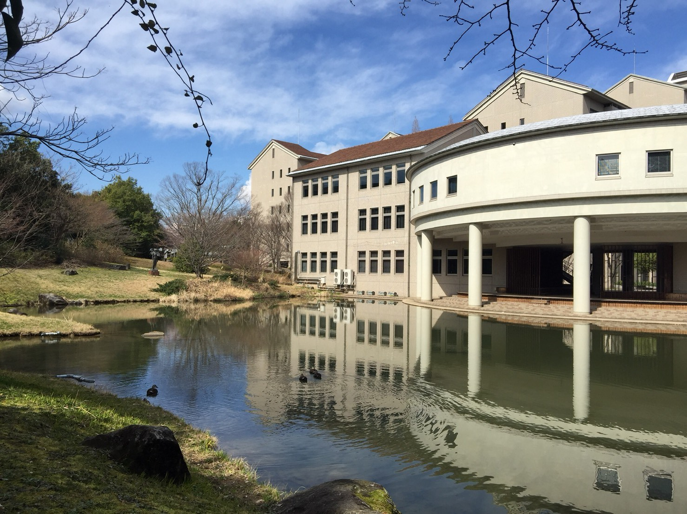
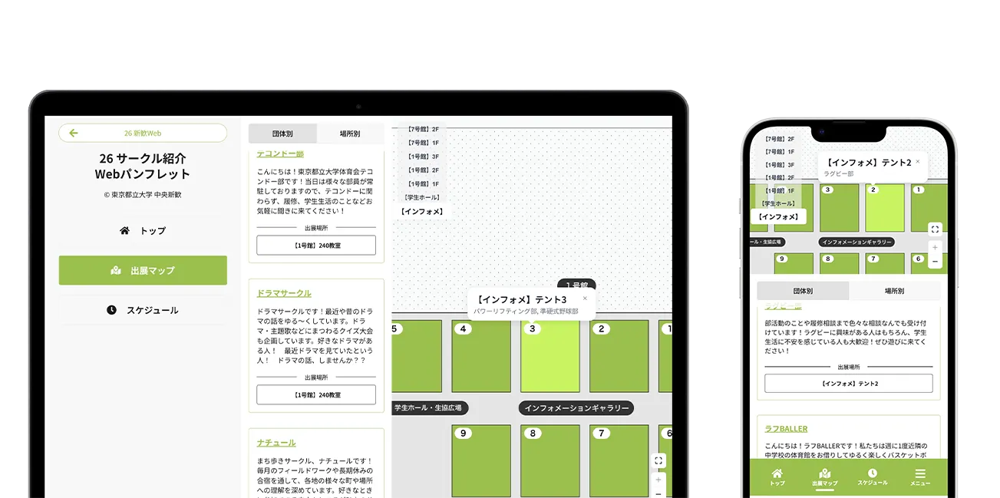

サークル紹介
目次
概要
開催：4/4（土）11:00~16:00
サークル紹介は体育会系・文化系問わず、数多くのサークル・部活動が参加するイベントです！
当日は参加団体が各所にブースを設け、日頃の活動を紹介します。
100以上の団体が参加する本学の大規模な新歓イベントはこのサークル紹介だけ！
この機会に先輩から情報を引き出すもよし、時間割の最終確認をするのもよしと、なんでもあり！
サークル以外に先輩の話を聞いてみたいという方も、ぜひこのサークル紹介に参加してみてはいかがでしょうか？
サークルのブースに足を運べば、履修の話やサークル、一人暮らしの話、趣味の話など自由に過ごすことができます。 また、空の目門や生協広場では、演奏やパフォーマンスの披露が行われます。
参加方法
開催時間に南大沢キャンパスに足を運ぶだけです。申請などは不要で入退場も自由です。

サークル紹介 Webパンフレット
本日開催のサークル紹介の出展情報を掲載しています！
